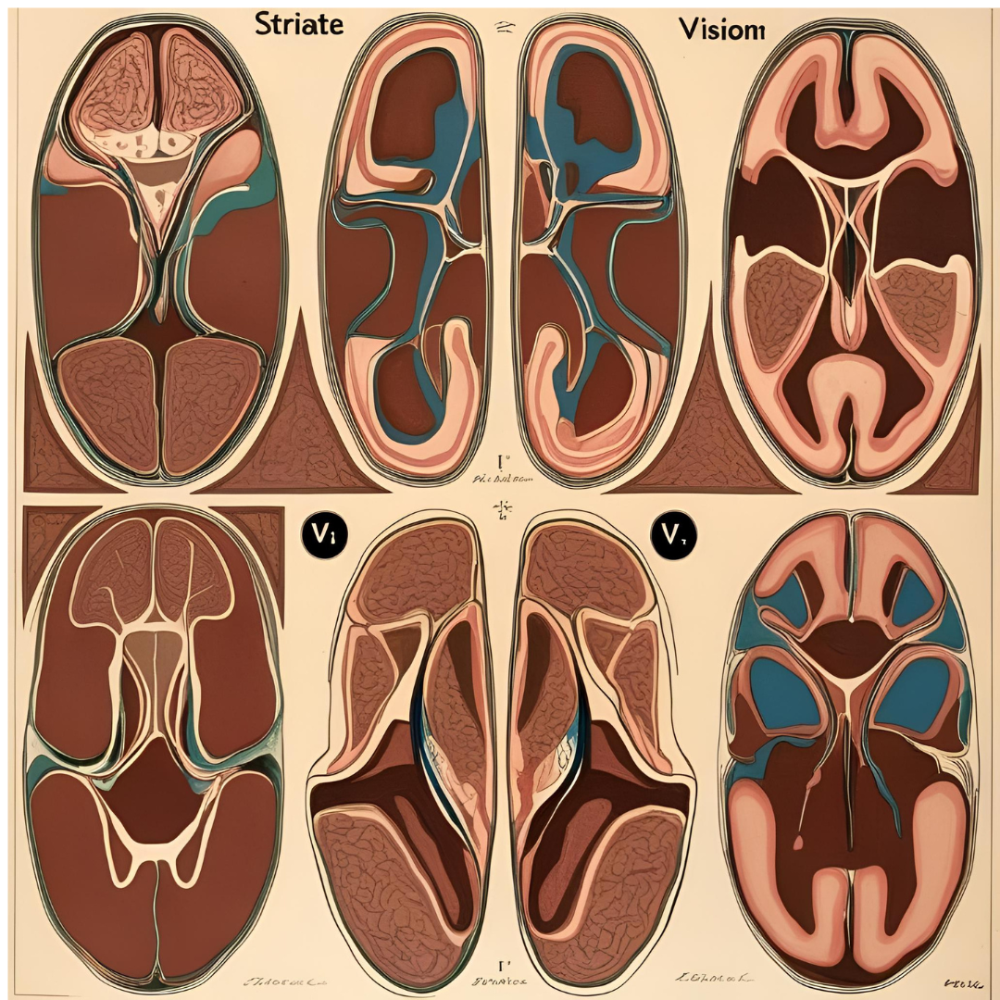
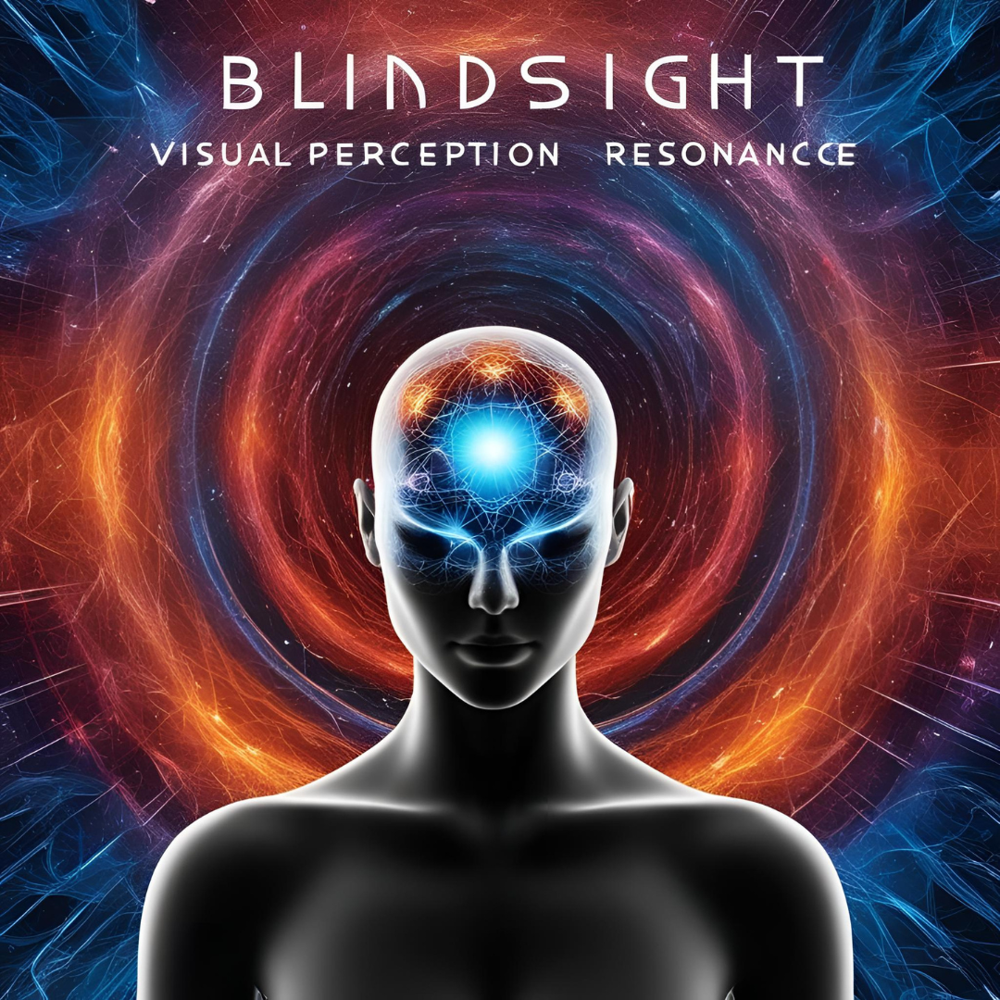

Code
knitr::include_graphics("striateV1.png")

Edward F. Hillenaar
February 27, 2025

Blindsight, a phenomenon in which patients with visual cortex damage exhibit residual visual abilities despite being subjectively blind, poses a challenge to traditional models of perception and consciousness. The Resonance Theory of Consciousness (RTC) provides a novel framework for understanding blindsight by positing that perception is the derivative of experience. This theory suggests that the brain fragments the continuous vibrational flow of reality into discrete perceptual units, influenced by the psychological unit of duration (50–100 msec). In the case of blindsight, RTC suggests that residual vision emerges from intact vibrational resonance pathways that bypass the primary visual cortex. This paper explores how RTC explains the neurophysiological mechanisms underlying blindsight and provides insights into its implications for consciousness research.
Blindsight challenges conventional theories of vision and consciousness by demonstrating that visual information can be processed and acted upon without conscious awareness. Classical models of vision suggest that damage to the striate cortex (V1) results in a complete loss of visual perception. However, blindsight patients can detect and respond to visual stimuli in their blind fields, despite lacking subjective awareness of seeing.
RTC proposes that perception is the derivative of experience, meaning that the brain actively transforms continuous sensory input into discrete perceptual units for cognitive processing. This transformation occurs within the psychological unit of duration (50–100 msec), allowing the brain to generate approximately ten perceptual objects per second. In blindsight, RTC suggests that while the primary perceptual pathway is disrupted, residual vibrational resonance mechanisms in the brain allow for the extraction of limited visual information, albeit below the threshold of conscious perception.
Vibrational Resonance and Perception
RTC posits that reality consists of an undivided vibrational flow, which the brain discretizes into manageable perceptual fragments. In normal vision, this process occurs via the striate cortex, which segments visual input into distinct perceptual objects. However, in blindsight, alternative resonance pathways outside the striate cortex—such as those involving the superior colliculus, pulvinar, and extrastriate areas—allow for residual visual processing.
Psychological Unit of Duration and Residual Vision
Blindsight patients often exhibit responses to motion-based stimuli rather than stationary objects (Bao et al. 2024). According to RTC, motion perception is particularly reliant on rhythmic resonance patterns that align with the psychological unit of duration (Poppel 1978). Since motion involves continuous change over time, its resonance may persist even when standard object perception fails. This explains why blindsight patients report awareness of moving but not static stimuli, as seen in functional MRI studies.
Neuroplasticity and Cortical Reorganization
Recent neuroimaging studies indicate that in blindsight patients, visual processing shifts to the ipsilateral hemisphere (Bao et al. 2024), suggesting compensatory neuroplasticity. RTC interprets this phenomenon as evidence of an imbalance in excitatory and inhibitory resonance interactions across cortical networks. Damage to V1 disrupts standard perceptual segmentation, but the underlying vibrational framework remains intact, allowing perception to manifest in non-traditional neural pathways.
Blindsight offers profound insights into the nature of consciousness. Traditional models argue that conscious awareness arises from neural activation in specific cortical regions. However, RTC suggests that consciousness is a function of resonance alignment between neural activity and the vibrational structure of reality. In blindsight, perception occurs without subjective awareness because the derivative function of perception is only partially reconstructed from residual vibrational input.
This aligns with cases where blindsight patients exhibit size constancy and object completion, despite lacking conscious recognition. RTC posits that while full conscious perception requires an intact derivative transformation process, residual resonance allows for partial per-ception without subjective experience.
RTC and Future Research on Blindsight The Resonance Theory of Consciousness provides a novel explanation for blindsight by suggesting that residual vision arises from alternative vibrational resonance pathways rather than conventional visual processing circuits. This theory challenges traditional models by framing perception as the derivative of an undivided vibrational reality.
Future research should investigate how vibrational resonance mechanisms influence cortical plasticity and alternative neural pathways in blindsight patients. Understanding these processes could lead to new therapeutic approaches aimed at enhancing residual vision in indi-viduals with cortical blindness.
By integrating RTC into the study of blindsight, we gain deeper insight into the fundamental nature of perception, consciousness, and neuroplasticity, reinforcing the idea that conscious awareness emerges not simply from neural activity but from its alignment with the vibrational fabric of reality.